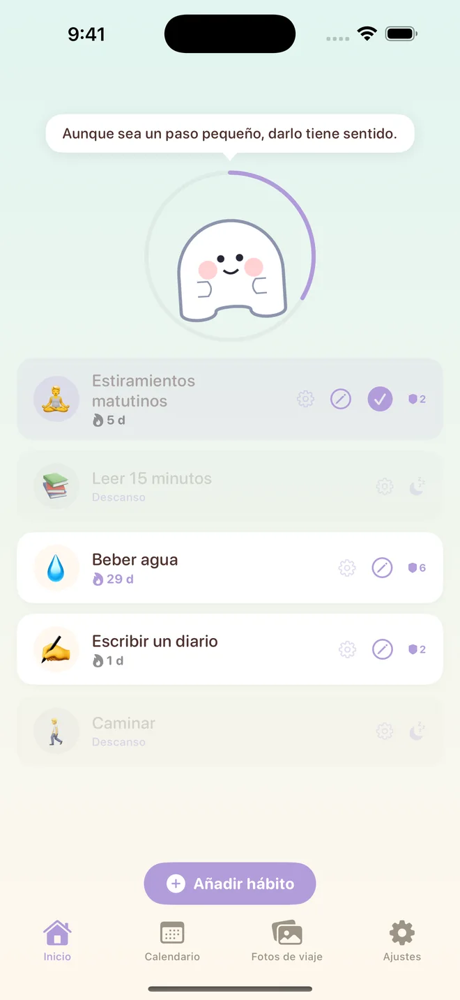
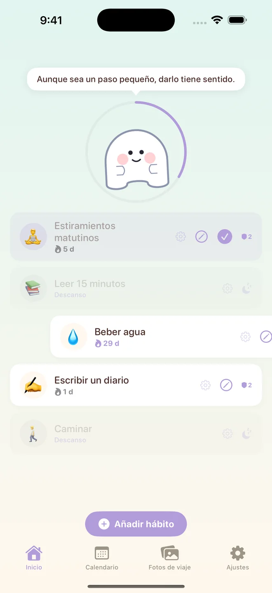
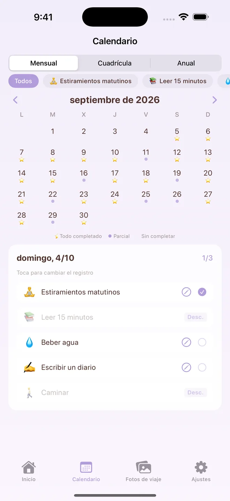

A tu propio ritmo
Elige los días de la semana, los recordatorios y la hora de cambio de día. También puedes consultar tu progreso de hoy en el widget de la pantalla de inicio.
TUS HÁBITOS. TU COMPAÑERO. TU PRÓXIMA AVENTURA.
Completa todos tus hábitos del día y recibe una foto de viaje. Con Marutto animándote y 250 fotos por descubrir, cada pequeño paso tiene su recompensa.
iPhone y iPad / Gratis con anuncios / Sin cuenta
Funciones


01 — LITTLE BY LITTLE
Estirarte, leer una página, beber un vaso de agua. Empieza por algo pequeño: Marutto te acompaña.

A SMALL STEP FORWARD
Desliza una tarjeta para marcar el hábito como completado. También puedes deshacerlo o modificar registros anteriores desde el calendario.
Toca para una pequeña victoria
Demostración del sitio
Tanto en los días de esfuerzo como en los que no salen tan bien, Marutto te anima.
EVERY LITTLE DAY COUNTS
Consulta el calendario mensual, la cuadrícula de cada hábito y el registro anual para ver lo que has ido construyendo cada día. También puedes dejar notas en cada hábito.

02 — A WORLD OF LITTLE REWARDS
fotos de viaje para coleccionar


Completa todos los hábitos del día y recibe una foto de viaje. Descubre 250 fotos con los diarios de viaje de Marutto y datos curiosos. También puedes ver un anuncio de vídeo con recompensa para conseguir una foto extra.
Abre una foto que te guste y usa el botón Compartir para compartir la foto y el diario. Se incluyen el enlace a la app y #MaruttoTracker.
03 — AT YOUR OWN PACE
Elige los días de la semana, los recordatorios y la hora de cambio de día. También puedes consultar tu progreso de hoy en el widget de la pantalla de inicio.
Consigue un escudo cada 7 días seguidos. Puedes activar o desactivar en Ajustes la función que protege tu racha cuando un día se te olvida.
Disfruta de la interfaz, las frases de Marutto y los diarios de viaje en tu idioma preferido.
Puedes descargarla y usarla gratis. Incluye anuncios y vídeos opcionales para recibir fotos de viaje adicionales.
No necesitas una cuenta. Tus registros de hábitos se guardan en tu dispositivo. Para iPhone y iPad con iOS 17 o posterior.